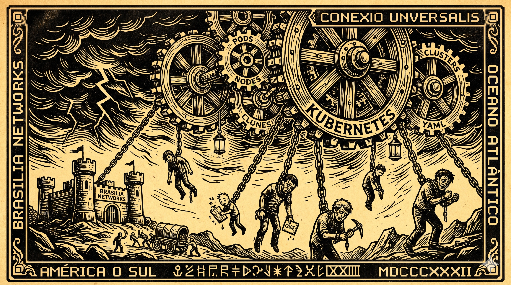
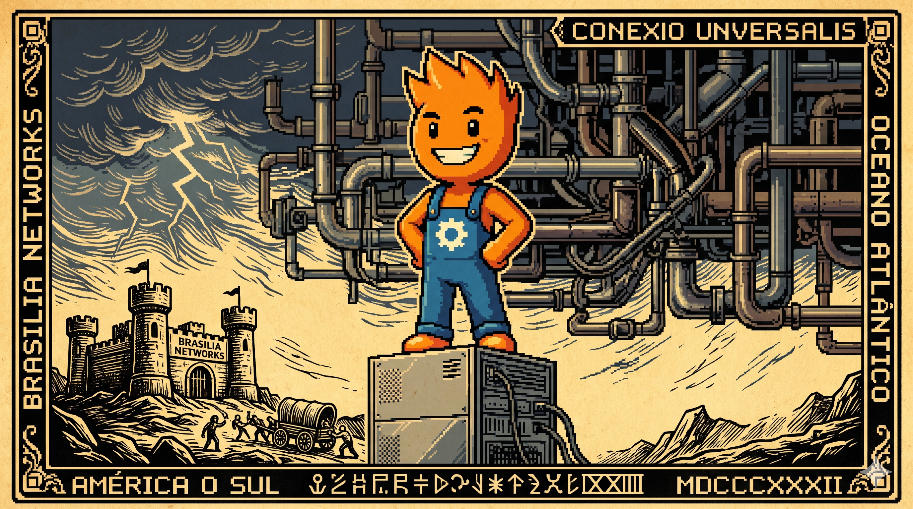

Canto II: O Suplício da Nuvem Dependente
Disseram que a nuvem era o céu do programador,
Que o Kubernetes ia orquestrar com muito amor.
Mas quando o cabo rompe e o roteador apaga o sinal,
A nuvem vira cinza e o prejuízo é fatal!
Sem rede no mercado, o caixa para de vender,
E o cliente com a compra começa a se enfurecer.
O cordel acima ilustra a dura realidade das redes de lojas brasileiras que confiam cegamente na estabilidade da nuvem centralizada. Abaixo, analisamos a complexidade técnica e a alternativa da autonomia de borda.

O Problema de Hardware no Ponto de Venda
Máquinas de ponto de venda no varejo operam sob condições físicas severas. Elas precisam de inicialização instantânea, latência de resposta em microssegundos para não atrasar o leitor de código de barras e tolerância total a panes físicas de energia. Tentar rodar orquestradores complexos pensados para data centers nesse cenário é ignorar a física do balcão.
O Modelo Orquestrado vs. Borda Soberana
Não existe cenário em que o Kubernetes — seja rodando de forma remota na nuvem ou forçado localmente na loja física — seja adequado para o ponto de venda. O Kubernetes é excelente no datacenter para orquestrar escala horizontal de aplicações web distribuídas. Mas no caixa do varejo físico, essa transposição de modelo de complexidade é um erro arquitetural grave. A arquitetura de Borda Soberana do CaraCore PDV não compete com clusters; ela substitui completamente a dependência de orquestradores e da rede local.
O Desperdício de Infraestrutura Local com Orquestradores
Tentar rodar distribuições de Kubernetes voltadas para a borda (como k3s ou MicroK8s) na máquina física do caixa é um desperdício inútil de recursos que ignora a realidade do hardware do varejo brasileiro. Mesmo ocioso, o k3s sequestra entre 300MB e 400MB de RAM apenas para sustentar redes de overlay virtuais (túneis VXLAN), resolução interna de DNS e agentes de controle de ciclo de vida (Kubelet e Kube-proxy).
Em computadores de balcão com processador dual-core antigo, esse ciclo de controle consome CPU valiosa que deveria estar dedicada a receber a venda do cliente sem atrasos.
Tabela Comparativa: Aplicação Web (Kubernetes) vs. PDV Soberano
Veja as diferenças fundamentais de premissas e dependências de arquitetura entre esses dois ecossistemas:
A Fragilidade da Centralização Forçada e a Realidade das Lojas
Estudos de infraestrutura de telecomunicações no varejo físico brasileiro indicam que uma loja média sofre cerca de 14 interrupções de conexão por mês, variando entre oscilações de sinal de modems 4G de contingência, quedas de provedores de fibra regionais e falhas físicas de cabeamento.
No modelo centralizado tradicional, cada operação depende diretamente da internet. Cada bip do scanner de código de barras precisa fazer uma viagem de ida e volta à nuvem. A latência da rede vira o principal gargalo físico do caixa e qualquer queda de sinal paralisa imediatamente a operação de vendas.
Se um supermercado com faturamento de R$ 10.000 por hora ficar com caixas parados durante 30 minutos em um sábado de pico devido a falha na fibra, o prejuízo direto e imediato em vendas perdidas e insatisfação de clientes na fila ultrapassa o custo de implantação de toda a licença de software local.
Arquitetura e Fluxo de Borda Soberana
O CaraCore PDV adota a Soberania da Borda. Definimos soberania como a soma de três pilares: Autonomia de execução do caixa, Resiliência física a panes e Isolamento contra falhas de rede. Cada caixa de balcão funciona como uma ilha autônoma, eliminando pontos únicos de falha na loja.
Veja a diferença estrutural de acoplamento de rede na borda:
O sincronismo com a nuvem central ocorre de forma estritamente unidirecional e assíncrona. No modelo assíncrono, o caixa registra a venda localmente e envia depois — sem depender da internet para operar. A rede deixa de ser uma dependência vital e passa a ser apenas um meio de transporte secundário de dados.
Quando uma venda é concluída na tela, os dados são salvos em transação ACID local (SQLite local) e enfileirados no padrão Outbox Pattern no próprio disco da máquina física. Se a rede de internet cair, o caixa continua registrando e imprimindo cupons de venda localmente por dias. O sincronizador detecta a perda de conectividade silenciosamente e aguarda o retorno da conexão estável para transmitir as transações acumuladas em lote compactado à retaguarda central.
⚖️ O Veredito da Bancada (Técnico vs. Negócios)
💻 Para Técnicos (A Baseline)
Eliminar o k3s e o Docker na máquina local reduz o consumo de RAM em mais de 90%. Redes de overlay criam uma camada de rede virtual sobre a rede física, o que é um desperdício total para um caixa que só precisa gravar no disco local. Usamos ligação direta ao sistema operacional via sockets locais, removendo o overhead de roteamento de pacotes virtuais.
👔 Para Negócios (O Retorno)
Imunidade total contra quedas de operadoras e perdas financeiras em horários de pico. O caixa opera offline de forma transparente, reduzindo em 68% os chamados de suporte técnico de rede e mantendo a operação da loja ativa mesmo sob as piores condições de conectividade da região.
Conclusão do Canto da Independência
A eliminação de orquestradores pesados e redes virtuais na borda é o primeiro passo para obter resiliência de caixa no varejo autônomo. Software robusto deve tolerar a falha física e continuar executando sua missão de forma local e autocontida. Não existe cenário em que o Kubernetes — local ou remoto — seja adequado para PDVs. A arquitetura soberana não é uma alternativa ao cluster; é uma alternativa à dependência.
Com a stack operacional saneada e a rede desacoplada do fluxo de faturamento, a próxima questão crucial da arquitetura física é o armazenamento de dados local. No próximo canto, detalharemos como conseguimos garantir persistência ACID robusta contra quedas de energia no balcão usando um banco local embarcado de alta eficiência.
Hashtags
Contato
- E-mail: suporte@caracore.com.br
- Site: www.caracore.com.br
- LinkedIn: Cara Core Informática
Conheça a resiliência offline-first do CaraCore PDV e garanta faturamento ininterrupto em qualquer clima.
Falar de Resiliência